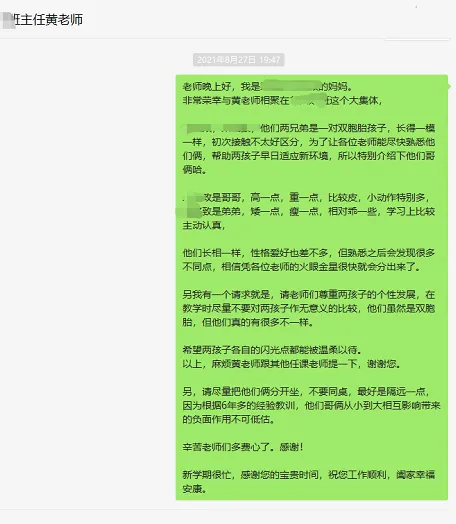
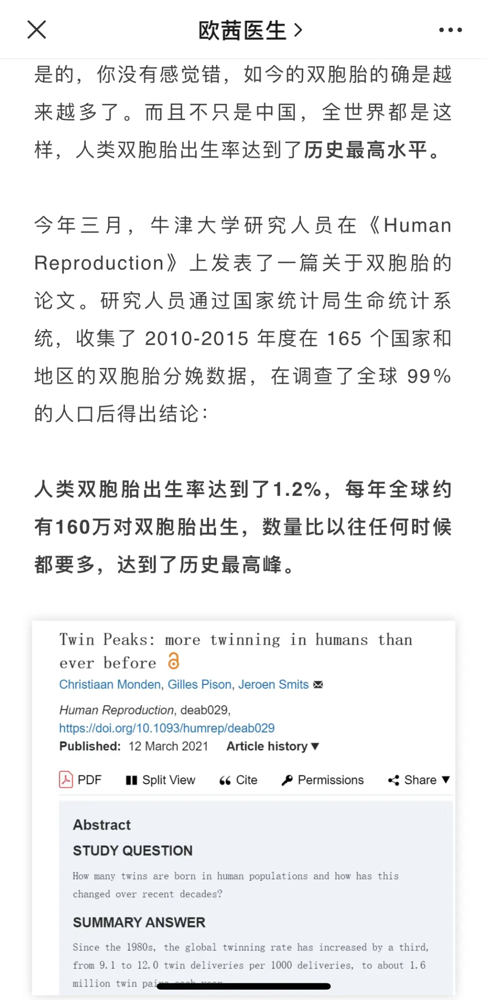
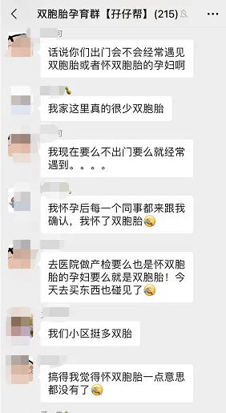
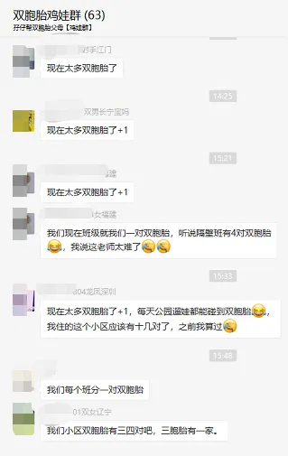
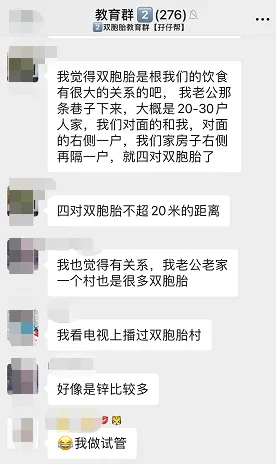
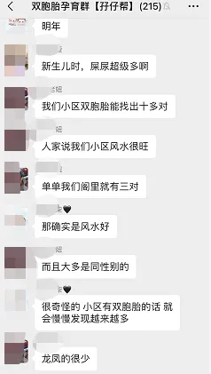

孖仔帮
公众号ID：twinsbang
关注
文|圆圈妈
网图|侵删
1
自从圆圈兄弟读小一同班后，我又变了。
像所有双胞胎家长一样，非常担心两人被老师和同学拿来做一些无意义的比较。
于是，新生家长会之后，我就发微信给他们的班主任，情词恳切地说出了老母亲的担忧和不情之请，又担心老师把两人搞错，还特别做了重点介绍。
可是老师没有回复，不知道是看了还是没看，还是没空回复，我只觉得尴尬+忐忑，同时又不甘心。
于是，从来不喜欢在群里搭话闲聊的我也跟着接龙一些没营养的话，如【收到，谢谢】【老师辛苦了，谢谢】，企图混个眼熟，刷点存在感；从来不喜欢凑热闹的我又积极加入了家长义工队伍，因为有机会接触到老师。
终于在一次班级大扫除，让我逮到机会，把班主任堵在门口，寒暄了几句，一番闲聊后，才发现，是我自作多情了。
她说，圆圈这一届的小一有8个班，其中有5个班就有1对双胞胎，她很尴尬地表示，现在还分不清哪个是圆，哪个是圈，但她已经积极采取措施，与另外4位老师达成共识，一起研究如何快速分辨双胞胎，还有针对如何教育双胞胎也展开了深入的讨论。
赞，感恩遇到这么用心的老师。
听到她说1年级有这么多对双胞胎，我也更加放心了，双胞胎群体越来越强大，学校必定会出台一些相应对策，尔等期待吧！
2
话说，现在为啥突然冒出那么多双胞胎啊？
前几天看新闻说德州市实验小学，一年级640名新生，其中竟有13对双胞胎，这是该学校历史上，同一届学生中出现双胞胎最多的一年。老师们都表示太考验眼力，有些长得特别像，真的是傻傻分不清。
其实这个新闻真的很水，现在双胞胎随处可见，早已经不是什么新鲜事了。
以前在路上看到双胞胎，我会觉得很稀奇，还会很八卦地过去围观下。可是，好像自从自己有了双胞胎后，就颇为纳闷：咦，怎么身边的双胞胎越来越多了啊！？
这是我过于关注双胞胎导致的错觉，还是...这本身就是一个趋势呢？
之前看过欧茜医生在公众号上写的一篇文章，提到了双胞胎扎推出生的现象：每年全球约有160万对双胞胎出生，每42个新生儿中就有一对是双胞胎，这一数据竟然创下历史新高。
我数学很差，对这些数据不敏感，但从我个人养育双胞胎的经历和接触的人群来看，我的确明显感觉到双胞胎数量在逐年递增。
18年，孖仔帮的双胞胎社群建立之初，只有不足50位的双胞胎妈妈，后面随着关注的读者越来越多，光是孕育群就有2个，每个群都是400多号人，一度封顶到要追加第三个群。
这还不算喂养群，养育群和教育群，就连刚开始只有10个人的双胞胎爸爸群，短期内就有200多号宝爸涌进群来，求抱团取暖，共渡难关。
我们住的小区是独栋，才500多户，据不完全统计，我们楼上就有两对，注意哦，是一对龙凤胎，一对女儿（好恐怖，4个孩子），8楼一对女儿，15楼一对儿子...
圆圈曾就读的幼儿园，他们班上就有3对双胞胎，圆圈是其中一对，另外两对是龙凤胎。
每次带圆圈出门，都很大概率遇到其他双胞胎孩子，就是想不遇见都难。
体育公园，放眼望去就有3对双胞胎，一对在跑道上打架（圆圈兄弟，打架从来不分场合），一对在跳绳（一对姐俩，估计小学2年级），一对在换尿不湿（一对小萝莉，约莫1岁半）
儿童公园沙池堆，总共就11个孩子，居然有两对双胞胎，这4个娃就占了人数的三分之一。
有一次在COCOpark厕所里，清洁工阿姨问我，你这一对是双胞胎啊？
”嗯，是啊！“
“哎呦，这是我今天见到的第9对双胞胎了，我都看晕了。”
“...阿姨，您真有雅兴！”
还有一次更搞笑，在商场电梯上，就两对双胞胎，4个大人，大家都带着口罩，大眼瞪大眼，小眼瞪小眼，大眼再瞟一下小眼，小眼回瞪了一下大眼，
然后都不约而同地憋不住，意味深长地...笑了！
哈哈，你们也是双胞胎啊！
这只是我个人经历和个人觉得，再看社群里其他妈妈的分享↓
也都纷纷表示：现在去到哪里，都能看到双胞胎。
3
身边的双胞胎越来越多，原因何在？
人工制造？药物作用？还是自然受孕？
可能都有吧，此处不做深入研究。
只想说，技术控可以有，但莫丧失了对繁衍生命的尊重，莫失去了对生命发自内心的喜爱和感动。
前几日在校门口等圆圈放学时，与一位二胎妈妈闲聊了几句，她说超级羡慕我一胎就搞定两个娃，等娃上学后就自由安排了，而不是像她那样，大娃上学了，还得回家伺候小娃，完全没有自己的时间，去哪里都束手束脚。
我苦笑，不知道该说什么，那些屁滚尿流的往事不堪回首，岂是三言两语说得清。
这年头，羡鱼羡仙可以有，千万不要羡双胞胎。
只受一次罪就有两个娃不是赚，而是坑，两个巨坑！
的确，能怀上双胞胎是一件特别幸运的事情。
但是...双份的美好，需要双份的付出，谁生谁知道！
每一对“复制黏贴”的双胞胎背后，都有一个了不起的妈妈。
所以，若是哪天在路上遇到一对双胞胎，夸孩子们萌哒哒的同时，也请给双胞胎的妈妈一个么么哒的鼓励和10086个赞吧！
谢谢。
今日互动话题
#你周围的双胞胎多吗？#
评论区聊一聊呗！
微信公众号：孖仔帮
ID : twinsbang
专注双胞胎孕育，养育，教育经验分享
扫码关注我们
点一下你会更好看耶







